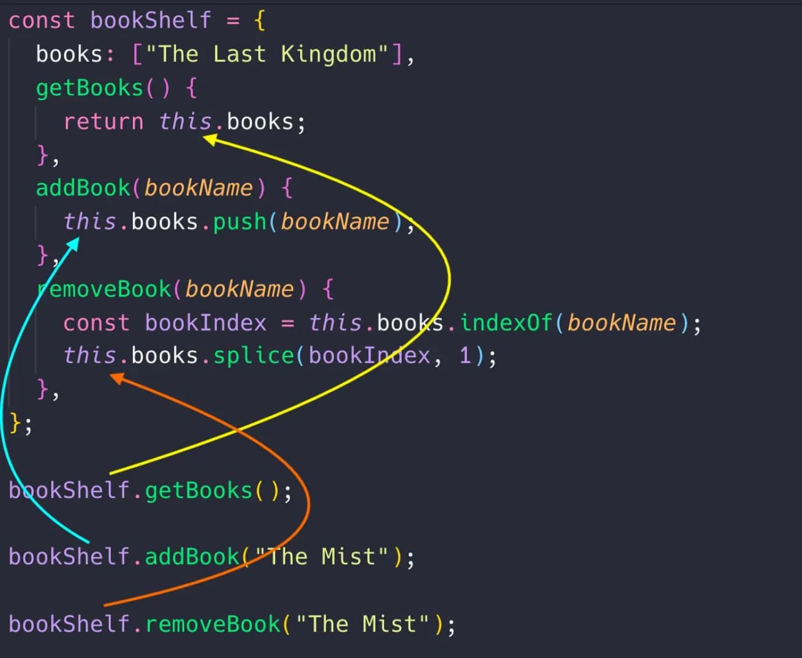

Объекты
Объекты позволяют описать и сгруппировать хар-ки в определенную
сущность пользователя, книги, продукты в магазине, чего угодно.
Объекты называют словарями, т.е они содержат термины (свойства) и
определения(значения)
Создание объекта
Для объявления используются {}
const book = {
title: 'Kingdom',
author: 'Name Lastname',
genres: ['History', 'Horror', 'Comedy'],
isPublic: true,
rating: 8.4,
};
Во время создания объекта можно добавлять свойства, которые описываются парами ключ: значение. Ключем называют имя свойства и это всегда строка. Значением свойства могут быть любые типы, примитивы, массивы, були, функции, объекты и т.д. Свойства разделяются запятой
-
Правила нейминга ключей
- Если ключи взятые в "" то это может быть произвольная строка
- Если кавычек нет то есть ограничения - имя без пробела, начинается буквой или символами _ и $
Вложенные свойства. Значением свойства может быть другой объект для того чтобы хранить вложенные и сгруппированные данные. Например, статистика пользователя соц сети состоит из кол-ва отслежевателей, просмотров и ругательств и сохранять эти данные удобнее всего в виде объекта. То же с местом раположения - отдельно страна и город
const user = {
name: "Vasya Pupkin",
tag: "#Vasya",
location: {
country: "England",
city: "London",
},
stats: {
folowers: 15,
views: 2,
like: 1,
}
}
В будущем это можно использовать для поиска пользователей, города,
минимальному и максимальному кол-ву подписчиков и т.д
Доступ к свойству через точку
Первый способ получить доступ к свойству объекта это синтаксис
объект.имя_свойство. Синтаксис через точку используется в
большинстве случаев и уместен тогда, когда мы заранее знаем имя (ключ)
свойства, к которому хотим получить доступ
На месте обращения будет возвращено свойство с таким именем. Если
объект не содержит свойтво с таким именем на месте обращения будет
возвращено undefind.
const book = {
title: 'Kingdom',
author: 'Name Lastname',
genres: ['History', 'Horror', 'Comedy'],
isPublic: true,
rating: 8.4,
};
const bookTitle = book.title;
console.log(bookTitle);//Kingdom
const bookAuthor = book.author;
console.log(bookAuthor);//Name Lastname
const bookPrice = book.price;
console.log(bookPrice);//undefind
Обращение к вложенным свойствам
Для доступа к вложенным свойствам используется цепочка запросов через
точку. Например чтобы получить значени страны пользователя пишем
user.location.country. Это ссылка к объекту в свойстве location, а
user.location.country в этом объекте. Таким образом точка указывает на
следуюзее вложение
const user = {
name: 'Vasya Pupkin',
tag: '#Vasya',
location: {
country: 'England',
city: 'London',
},
stats: {
folowers: 15,
views: 2,
like: 1,
},
};
const userLocation = user.location.country;
console.log(userLocation);//England
const userStatus = user.stats.friends;
console.log(userStatus);//undefind
Если значение свойства это массив то в нашем примере user.hobbies обращение к этому массиву. Дальше можно получить доступ к его элементам через [] и index, переиспользовать свойства и методы
const user = {
name: 'Vasya Pupkin',
tag: '#Vasya',
location: {
country: 'England',
city: 'London',
},
stats: {
folowers: 15,
views: 2,
like: 1,
},
hobbies: ['Swiming', 'Music', 'Box'],
};
const hobbie = user.hobbies;
console.log(hobbie); //[ 'Swiming', 'Music', 'Box' ]
const firstHobbie = user.hobbies[0];
console.log(firstHobbie); //"Swiming"
const lengthHobie = user.hobbies.length;
console.log(lengthHobie);//3
Обращение к свойствам через [] второй способ получить доступ к
свойству объекта это синтаксис ["имя свйоства"]. Похоже на обращение к
элементу массива с разницей в том, что в скобках указывается не индекс
элемента а имя свойства в виде строки
Синтаксис [] используется значительно реже, в случае когда имя
свойства заранее не известно или хранится в переменной например как
значение параметров функции
На месте обращения будет возвращено значение свойства с таким именем.
Если в объекте отсутствует свойство с таким именем вернется undefind.
const book = {
title: 'Kingdom',
author: 'Name Lastname',
genres: ['History', 'Horror', 'Comedy'],
isPublic: true,
rating: 8.4,
};
const bookTitle = book['title'];
console.log(bookTitle); //Kingdom
const propKey = 'author';
const bookAuthor = book[propKey];
console.log(bookAuthor);//Name Lastname
Изменение значения свойств
После создания объекта значение его свойства можно изменить, для этого
нужно обратиться к нему по имени, например через точку и присвоить
новое значение
const book = {
title: 'Kingdom',
author: 'Name Lastname',
genres: ['History', 'Horror', 'Comedy'],
isPublic: true,
rating: 8.4,
};
book.title = 'Castle';
book.isPublic = false;
book.genres.push('Drama');
console.log(book.title);//Castle
console.log(book.isPublic);//false
console.log(book.genres);//[ 'History', 'Horror', 'Comedy', 'Drama'
]
Добавление свойства
Операция добавления нового свойства после создания объекта ничем не
отличается от изменения значения уже существующего свойства. Если во
время записи значения по имени такого свойства нет, оно будет создано
const book = {
title: 'Kingdom',
author: 'Name Lastname',
genres: ['History', 'Horror', 'Comedy'],
isPublic: true,
rating: 8.4,
};
book.pageCount = 600;
book.originalLanguage = "En";
book.translations = ["Uk", "Ru", "Pl"];
console.log(book.pageCount);//600
console.log(book.originalLanguage);//'En'
console.log(book.translations);//["Uk", "Ru", "Pl"]
Короткие свойства
Иногда при создании объекта значение свйоства необходимо взять из
переменной или параметров функции с тем же именем что и у свойства.
Cинтаксис в след примере слишком большой, потому что приходится
дублировать имя свойства и имя переменной в которой хранится нужное
значение
const name = "Vasya Pupkin";
const age = 30;
const user = {
name: name,
age: age,
}
console.log(user.name);//"Vasya Pupkin"
console.log(user.age);//30
Синтаксис сокращенных свойств решает эту проблему, позволяя использовать имя переменной в качестве имени свйоства, а ее значение в качестве значения свойства
const name = 'Vasya Pupkin';
const age = 30;
const user = {
name,
age,
};
console.log(user.name); //"Vasya Pupkin"
console.log(user.age); //30
То есть при объявлении объекта достаточно указать только имя свойства
и значение будет взято из переменной с аналогичным именем
Вычислительные свойства
Иногда возникают ситуации когда при объявлении объекта необходимо
добавить свойство с именем, которое заранее не известно, т.к оно
хранится как значение переменной или в качестве результата выполнения
функций
Ранее для этого приходилось сначала содавать объект а затем добавлять
свойство через [] что не всегда удобно
const propName = 'name';
const user = {
age: 25,
};
user[propName] = 'Vasya Pupkin';
console.log(user.name);//Vasya Pupkin
Синтаксис вычесляемых свойств помогает избежать лишнего кода и в некоторых случаях упростить его. Значением вычесляемого свойства может быть любое доступное выражение
const propName = 'name';
const user = {
age: 25,
// Имя этого свойства будет взято с переменной propName
[propName]: "Vasya Pupkin"
};
console.log(user.name); //Vasya Pupkin
Методы объекта
До сих пор мы рассматривали объекты только как хранилище
взаимосвязанных данных, например информация о книге и т.д.
Объекты-хранилищ обычно находятся в массиве таких же объектов, которые
являются коллекцией однотипных элементов
Объекты могут хранить не только данные но и функции для работы с этими
данными - методы. Если значения свойства это функция, такое свойство
называется методом объекта.
const bookShelf = {
books: ['Kingdom', "Custle"],
// Это метод объекта
getBooks() {
console.log("Этот метод будет проверять все книги - свойство
books");
},
// Это метод объекта
addBook(BookName) {
console.log("Этот метод будет добавлять новую книгу в свойства
books");
},
}
// Вызовы методов
bookShelf.getBooks();
bookShelf.addBook("New book");
Такие объекты можно назвать моделями, они считают в себе данные и методы для работы с этими данными, например можно было объявить переменную books и 2 функции getBooks() и addBook(bookName) но в этом случае это были бы 3 отдельные сущности без явного синтаксического связывания с недостаточной логической связью
const books = [];
function getBooks()
function addBook() {}
Доступ к свойствам объектов в методах
Методы используются для работы со свойством объекта и изменения их.
Для доступа к объекту в методе не используется имя переменной, такое
как bookShelf, а ключевое слово this - контекст. Значением this будет
объект перед точкой, то есть объект который вызвал этот метод. В нашем
случае это ссылка на объект bookShelf.
const bookShelf = {
books: ["Kingdom"],
getBooks() {
console.log(this);
}
}
// Перед точкой находится объект bookShelf, поэтому вызов метода this
будет сохранять ссылку на него
bookShelf.getBooks();
Для получения доступа к свойствам объекта в методах мы обращаемся к нему через this и затем стандартно используем достум к свойствам через точку.
const bookShelf = {
books: ['Kingdom'],
getBooks() {
return this.books;
},
addBook(bookName) {
this.books.push(bookName);
},
removeBook(bookName) {
const bookIndex = this.books.indexOf(bookName);
this.books.splice(bookIndex, 1);
},
};
console.log(bookShelf.getBooks()); //["Kingdom"]
bookShelf.addBook('New book');
bookShelf.addBook('Very New book');
console.log(bookShelf.getBooks()); //[ 'Kingdom', 'New book', 'Very
New book' ]
bookShelf.removeBook('Kingdom');
console.log(bookShelf.getBooks());//[ 'New book', 'Very New book' ]
Логично задуматься почему бы не использовать имя объекта в обращении к свойствам, ведь мы явно не собираемся его изменять. Дело в том, что имя объекта - вещь не надежная, методы одного объекта можно копировать в другой (с другим именем), а в будущем узнаем что часто во время создания объекта мы заранее отнюдь не знаем имя. Использование этого гарантирует что метод работает именно с тем объектом, который его вызвал.

Перебор объекта
В отличае от массива или строки объект это не итерабельная сущность,
т.е его нельзя перебрать циклами for и for .. off
for..in
Для перебора объекта используется специальный цикл for .. in который
перебирает ключи объекта object.
for (key in object){
//тело
}
Переменная key доступна только в теле цикла. На каждой итерации в нее будет записано значение ключа (имя) свойство. Для того чтобы получить значение свойства с таким ключом (именем) используется синтаксис []
const book = {
title: 'Kingdom',
author: 'Name Lastname',
genres: ['History', 'Horror', 'Comedy'],
isPublic: true,
rating: 8.4,
};
for (const key in book) {
console.log(key);
console.log(book[key]);
}
Метод hasOwnProperty()
Разбираем концепцию собственных и не собственных свойств объекта и
научимся правильно использовать цикл for..in
const animal = {
legs: 4,
};
const dog = Object.create(animal);
dog.name = 'Sharik';
console.log(dog); //{ name: 'Sharik' }
console.log(dog.name);//Sharik
console.log(dog.legs);//4
Метод Object.create(animal)
Создает и возвращает новый объект связывая его с объектом animal.
Поэтому можно получить значение свойства legs, обратившись к нему как
dog.legs хотя он отсутствует в объекте dog - это не собственное
свойство из объекта animal.
Оператор in используемый в цикле for..in не делает
разницы между собственными и не собственными свойствами объекта. Эта
особенность мешает, поскольку мы всегда хотим взять только собственные
свойства. Для того чтобы узнать чтобы узнать содержит ли объект
собственные свойства используется метод hasOwnProperty(key)
возвращающий true or false.
// Плохой пример
console.log("name" in dog);//true
console.log("legs" in dog);//true
// Хороший пример
console.log(dog.hasOwnProperty("name"));//true
console.log(dog.hasOwnProperty("legs"));//false
Поэтому перебирая циклом for..in необходимо на каждой итерации добавить проверку собственного свойства. Даже если сейчас мы уверены в том что в объекте отсутствуют не собственные свойства это защитит от возможных ошибок в будущем
const book = {
title: 'Kingdom',
author: 'Name Lastname',
genres: ['History', 'Horror', 'Comedy'],
isPublic: true,
rating: 8.4,
};
for (const key in book) {
// Если это собственное свойство - выполняем тело if
if (book.hasOwnProperty(key)) {
console.log(key);
console.log(book[key]);
}
// Если это не собстенное свойство - ничего не делаем
}
Метод Object.keys()
Встроенный класс Object имеет несколько полезных способов для работы с
объектами. Первый из них - это Object.keys(obj) который принимает
объект и возвращает массив ключей, его собственных свойств. Если
объект не обладает свойствами - метод вернет пустой массив.
const book = {
title: 'Kingdom',
author: 'Name Lastname'
, genres: ['History', 'Horror',
'Comedy'],
isPublic: true,
rating: 8.4,
};
const keys = Object.keys(book);
console.log(keys); //[ 'title', 'author', 'genres', 'isPublic',
'rating' ]
Скомбинировав результат Object.keys() и цикл for..of можно удобно перебрать собственные свойства объекта и не использовав архаический цикл for..in с проверками принадлежнасти свойств
const book = {
title: 'Kingdom',
author: 'Name Lastname',
genres: ['History', 'Horror', 'Comedy'],
isPublic: true,
rating: 8.4,
};
const keys = Object.keys(book);
for (const key of keys) {
console.log(key);
console.log(book[key]);
}
Мы перебираем массив ключей объекта и на каждой итерации получаем
свойство с таким ключем
Метод Object.values()
Если метод Object.keys(obj) возвращает массив ключей собственных
свойств объекта, метод Object.values(obj) возвращает массив значений
его собственных свойств. Если в объекте отсутствуют свойства, метод
Object.valuses(obj) вернет пустой массив.
const book = {
title: 'Kingdom',
author: 'Name Lastname',
genres: ['History', 'Horror', 'Comedy'],
isPublic: true,
rating: 8.4,
};
const keys = Object.keys(book);
const values = Object.values(book);
console.log(`keys: ${keys}\nvalues: ${values} `);
Массив значений свойства так же можно перебрать циклом for, например
для получения общей суммы цифровых значений
Предположим что нам нужно сосчитать общее кол-во продуктов в объекте
формата имя-продукта: колличество. В таком случае будет уместен метод
Object.values(). Для того чтобы получить массив общих значений, а
затем удобно добавить их
const products = {
apple: 4,
carrot: 10,
broad: 3,
cheese: 25,
}
const values = Object.values(products);
let total = 0;
for (const value of values) {
total += value;
}
console.log(total);//42
Метод Object.entries()
Метод возвращает массив записи каждый элемент которого будет еще один
массив из двух элементов: имени свойства и значения этого свойства из
объекта obj.
const book = {
title: 'Kingdom',
author: 'Name Lastname',
genres: ['History', 'Horror', 'Comedy'],
isPublic: true,
rating: 8.4,
};
const keys = Object.keys(book);
const values = Object.values(book);
const entries = Object.entries(book);
console.log(`Keys: ${keys}\nValues: ${values}\nEntries:
${entries}`);
На практике метод Object.enries(obj) используется редко, только для каких то очень спецефических задач. В 99% случаев будет использоваться Object.keys() и Object.values()
Массив объектов - стандартный набор обычных задач разработчика содержит манипуляцию массивом однотипных объектов. Это означает что объекты в массиве гарантировано будут иметь одинаковый набор свойств, но с разными значениями
const books = [
{
title: 'Kingdom',
author: 'Stiven King',
rating: 9.9,
},
{
title: 'Dom2',
author: 'King Kong',
rating: 1.1,
},
{
title: 'Custtle',
author: 'King Artur',
rating: 7.4,
},
];
Для перебора такого массива используется стандартный цикл for..of. Значения свойства каждого объекта можно получить использую синтаксис через точку, поскольку в каждом объекте набор свойств и их имена будут одинаковые, отличаются только значения
const books = [
{
title: 'Kingdom',
author: 'Stiven King',
rating: 9.9,
},
{
title: 'Dom2',
author: 'King Kong',
rating: 1.1,
},
{
title: 'Custtle',
author: 'King Artur',
rating: 7.4,
},
];
for (const book of books) {
console.log(`Книги: ${book}\nНазвание: ${book.title}\nАвтор:
${book.author}\nРейтинг: ${book.rating}`);
}
Например получаем список названий всех книг в коллекции books
const bookName = [];
for (const book of books) {
bookName.push(book.title);
}
console.log(bookName);//[ 'Kingdom', 'Dom2', 'Custtle' ]
Узнаем средний рейтинг всей нашей коллекции, для это добавим все рейтинги, после чего поделим это значение на количество книг в коллекции
let totalRating = 0;
for (const book of books) {
totalRating += book.rating;
}
let avgRating = (totalRating / books.length).toFixed(1);
console.log(avgRating);//6.1
Синтаксис spread и rest
В современном стандарте появился новый синтаксис для работы с
итерабельными сущностями, например строка, массив или объект. Его
функционал и название зависят от места применения
Spread: передача аргументов
Операция spread позволяет распределить коллекцию элементов (массив,
строку или объект) в место, в котором ожидается набор отдельных
значений. Конечно существуют некоторые ограничения, например нельзя
распределить массив в объект и наоборот
Можно привести аналогию с ящиком яблок. Поставь ящик на пол не вынимая
из него яблоки, поличим аналог массива значений. Если высыпать яблоки
из ящика на пол произойдет распределение - набор отдельных значений.
Отличие только одно - в JS распределение не изменяет оригинальную
коллекцию, т.е создается копия каждого элемента. После распределения
остается и полный ящик и копия каждого яблока на полу.
Например метод Math.max(...[14,-2,3,25,0]), после интерпритации
превращается в Math.max(14,-2,3,25,0) синтаксис ... возвращает
распакованый массив, т.е распределяет его элементы в качестве
отдельных доводов.
const temps = [14, -2, 3, 25, 0];
// В консоли будет массив
console.log(`Temps: ${temps}`); //Temps: 14,-2,3,25,0
// Так не сработает, потому что передаем целый массив
console.log(Math.max(temps)); //NaN
// В консоли будет набор отдельных чисел
console.log(...temps); //14 -2 3 25 0
// Распределяем коллекцию элементов в качестве отдельных аргументов
console.log(Math.max(...temps)); //25
Spread: создание нового массива
Операция spread позволяет создать копию массива или склеить
произвольное колличество массивов в один новый. Ранее для этого
использовали методы slice() и concat() но операция распределения
позволяет сделать то же самое в более короткой форме
const temps = [14, -2, 3, 25, 0];
// Это точная но независимая копия tepms[]
const copyOfTemps = [...temps];
console.log(copyOfTemps);//[ 14, -2, 3, 25, 0 ]
В выше приведенном примере у нас есть ящик яблок temps и мы хотим
создать его точную копию. Берем пустой ящик и пересыпаем из него
яблоки выходного ящика temps и распределяем его в другую коллекцию.
При таком условии ящик temps не изменится, в нем все еще будут яблоки
а в новом ящике его точные копии
В след примере мы высыпаем яблоки из 2 ящиков в один новый.
Оригинальные ящики (массивы) не изменятся, а новый будет копия всех
яблок(элементов). Порядок распределения важен, он влияет на порядок
элементов в новой коллекции
const temps1 = [14, -2, 3, 25, 0];
const temps2 = [14, -2, 3, 25, 0];
const allTemps = [...temps1, ...temps2];
console.log(allTemps);//[14, -2, 3, 25, 0, 14, -2, 3, 25, 0]
Spread: создание нового объекта
Опреция spread позволяет распределить произвольное кол-во объектов в
один новый.
const first = {
propA: 1,
propB: 15,
};
const second = {
propC: 25,
};
const third = { ...first, ...second };
console.log(third);//{ propA: 1, propB: 15, propC: 25 }
Порядок распределения не имеет значения. Имена свойств объекта уникальные, поэтому свойства распределяемого объекта могут перезаписать значения уже существующего свойства, если их имена совпадают
const first = {
propA: 1,
propB: 15,
propC: 50,
};
const second = {
propC: 25,
propD: 20,
};
const third = { ...first, ...second };
console.log(third); //{ propA: 1, propB: 15, propC: 25, propD: 20 }
const fourth = { ...second, ...first };
console.log(fourth); //{ propC: 50, propD: 20, propA: 1, propB: 15
}
Если бы яблоки в ящике имели наклейки с пометками то в одном ящике не
может быть 2х яблок с одинаковыми помеками, поэтому пересыпаю во
второй ящик все яблоки, отметки которых будут совпадать с уже
находящимися уже в новом ящике, заменят существующие
При распределении можно добавить свойство в любое место. Главное
помнить об уникальных именах свойств и о том что его значение может
быть перезаписано.
const first = {
propA: 1,
propB: 15,
propC: 50,
};
const second = {
propC: 51,
};
const third = {
propB: 10,
...first,
...second,
};
console.log(third); //{ propB: 15, propA: 1, propC: 51 }
const fourth = { ...second, ...first, propB: -5 };
console.log(fourth); //{ propC: 50, propA: 1, propB: -5 }
const fifth = { ...first, propC: 100, ...second };
console.log(fifth);//{ propA: 1, propB: 15, propC: 51 }
Rest: сбор всех аргументов функции
Операция ...(rest) позволяет собрать в группу независимых элементов в
новую коллекцию. Синтаксически это близнец операции распределения, но
отличить их просто - распределение когда находится в первой части
операции присвоения, а сбор когда находится в ее левой части
Вернемся к аналогии с яблоками. Если на полу лежат яблоки и у нас есть
пустой ящик то операция rest позволит собрать яблоки в ящик. В то же
время оригинальные яблоки останутся на полу а в ящике будут копии
каждого яблока. Одна из сфер применения операции rest это создании
функций, которые могут принимать любое количество аргуметов.
// Как объявить параметры функции таким образом чтобы можно было
передать большое количество аргументов
function multiply(...args) {
console.log(`args: ${args}`);
}
multiply(1, 3, 5);
Если убрать весь синтаксический шум и посмотреть на аргументы и
параметры функции, то аргументы находятся в правой части операции
присвоения, а параметры в левйо, потому что значения аргументов
присваивается объявленным параметрам. Следовательно можно собрать все
аргументы функции в один параметр используя операцию rest
Имя параметров может быть произвольным, чаще всего его называют args,
restArgs и otherArgs сокращенно от arguments
Rest: сбор части аргументов функции
Операция ...(rest) так же позволяет собрать в массив только ту часть
аргументов, которая необходимо объявить параметры до сбора
function multiply(firstNumber, secondNumber, ...args) {
console.log(firstNumber);
console.log(secondNumber);
console.log(args);
}
multiply(10, 20, 30); //10 20 [ 30 ]
multiply(10, 20, 30, 100, 1000);//10 20 [(30, 100, 1000)];
Все доводы для которых будут объявлены хар-ки передадут свои значения в массив. Операция ...(rest) собирает все остальные аргументы а потому должна быть последней в подписи функции иначе возникнет ошибка
Деструктуризация объектов
При разработке приложений данные приходят как правило в виде массивов и объектов, данные которых необходимо записать в локальные переменные. Для того чтобы делать это максимально просто в современном стандарте существует синтаксис деструктуаризированого присвоения
const book = {
title: 'Kingdom',
author: 'Name Lastname',
genres: ['History', 'Horror', 'Comedy'],
isPublic: false,
rating: 8.4,
};
const accessType = book.isPublic ? 'в печати' : 'не в печати';
const message = `Книга ${book.title} автора ${book.author} с рейтингом
${book.rating} находится ${accessType}`;
console.log(message);//Книга Kingdom автора Name Lastname с рейтингом
8.4 находится не в печати
Деструктуризация позволяет распаковать значения свойств объекта в локальные переменные, это делает код менее шумным
const book = {
title: 'Kingdom',
author: 'Name Lastname',
genres: ['History', 'Horror', 'Comedy'],
isPublic: false,
rating: 8.4,
};
const { title, author, genres, isPublic, rating, likes } = book;
console.log(likes); //undefined
const accessType = isPublic ? 'в печати' : 'не в печати';
const message = `Книга ${title} автора ${author} с рейтингом ${rating}
находится ${accessType}`;
console.log(message);//Книга Kingdom автора Name Lastname с рейтингом
8.4 находится не в печати
Деструктуризация всегда находится в левой части операции присвоения.
Пременная внутри фигурных скобок присваивается значение свйоств
объекта. Если имя переменной и имя свойства совпадают происходит
присвоение, в противном случае ей будет присвоена undefind. Порядок
объявления переменных в фигурных скобках не важен
Значения по умолчанию
Чтобы избежать присвоения undefind во время Деструктуризации в
несуществующих свойств объекта можно задать переменным значения по
умолчанию, которые будут присвоены только в том случае если объект не
содержит свойство с таким именем.
const book = {
title: 'Kingdom',
author: 'Name Lastname',
};
// Добавим изображение обертки, если оно отсутствует в объекте
книги
const { title, author, img = 'https://via.placeholder.com/640/480' } =
book;
console.log(title); //Kingdom
console.log(author); //Name Lastname
console.log(img); //https://via.placeholder.com/640/480
Изменение имени переменной
При Деструктуризации можно изменить имя переменной, в которой
распаковывается значение свойства. Сначала пишем имя свойства из
которого хотим получить значение, после чего ставим двоеточие и пишем
имя переменной в которую хотим поместить значение этого свойства.
const firstBook = {
title: 'First book',
img: 'https://via.placeholder.com/640/480',
};
const {
title: firstTitle,
img: firstImg =
'https://images-na.ssl-images-amazon.com/images/I/51b5YG6Y1rL.jpg', }
= firstBook;
console.log(firstTitle); //First book
console.log(firstImg); //https://via.placeholder.com/640/480
const secondBook = {
title: 'Second book',
};
const { title: secondTitle, img: secondImg = 'https://asdasdads' } =
secondBook;
console.log(secondTitle); //Second book
console.log(secondImg); //https://asdasdads
Такая запись читается как создать переменную firstTitle в котору
поместить значение свйоства title из объекта firstBook и т.д
Деструктуризация в циклах
Перебирая массив объектов циклом for..of образуется многократное
обращение к свойствам объекта
const books = [
{
title: 'Kingdom',
author: 'Name Lastname',
genres: ['History', 'Horror', 'Comedy'],
isPublic: false,
rating: 8.4,
},
{
title: 'Custle',
author: 'Harry',
genres: ['Drama', 'Melodrama', 'Comedy'],
isPublic: true,
rating: 0.4,
},
];
for (const book of books) {
console.log(book.title);
console.log(book.author);
console.log(book.rating);
}
Чтобы сократить кол-во повторений можно Деструктуризировать свойства объекта в локальную переменную в теле цикла
//Деструктуризированый вариант
for (const book of books) {
const { title, author, rating } = book;
console.log(title);
console.log(author);
console.log(rating);
}
Если в объекте не много свойств можно выполнить деструктуаризацию непосредственно на месте объявления переменной book
for (const { title, author, rating } of books) {
console.log(title);
console.log(author);
console.log(rating);
}
Глубокая деструктуаризация
Для деструктуаризации свойств вложенных объектов используются те же
принципы что и в трех предидущих упражнениях
const user = {
name: 'Username',
tag: '#User',
stats: {
folovers: 50,
views: 15,
likes: 10,
},
};
const {
name,
tag,
stats: { folovers, views: userViews, likes: userLikes = 0 },
} = user;
console.log(name);//Username
console.log(tag);//#User
console.log(folovers);//50
console.log(userViews);//15
console.log(userLikes);//10
Деструктурицация массивов
Деструктуризированое присвоение можно использовать для массивов но с
некоторыми особенностями
Вместо фигурных скобок используем квадратные. Переменным, указанным в
квадратных скобках, будут последовательно присваиваться значения
элементов массива.
Например есть массив цветов из которого нужно получить значение
каждого состовляюзего цвета в отдельной переменной
const rgb = [200, 255, 100];
const [red, green, blue] = rgb;
console.log(`R: ${red}, G: ${green}, B: ${blue}`);//R: 200, G: 255, B:
100
После ключевого слова const или let ставим квадратные скобки как и в
случае объявления массива. Внутри скобок через запятую указываем имена
переменных в которые будут помещены значения массива.
В результате такой записи будут созданы 3 переменных и в них
будут помещены элементы в нумерованом порядке от 0 до конца массива.
При диструктуризации массива значение переменной может присваиваться
после ее объявления. На практике редко используется.
const rgb = [200, 255, 100];
let red, green, blue;
[red, green, blue] = rgb;
console.log(`R: ${red}, G: ${green}, B: ${blue}`); //R: 200, G: 255,
B: 100
Если переменных больше элементов массива им будет присвоено undefind, поэтому можно указывать значение по умолчанию
const rgb = [200, 255, 100];
const [red, green, blue, alpha = 0.3] = rgb;
console.log(`R: ${red}, G: ${green}, B: ${blue}, Alpha: ${alpha}`);
//R: 200, G: 255, B: 100, Alpha: 0.3
Иногда из массива необходимо деструктуризировать только первые элементы, а другие сохранить в отдельную переменную в виде массива, деструктурируя массив можно распаковать и присвоить другую часть элемента в переменную массива используя операцию ...rest
const rgb = [200, 255, 100];
const [red, ...colors] = rgb;
console.log(red);//200
console.log(colors);//[ 255, 100 ]
Элементы можно пропускать. Предположим из массива rgb необходимо взять только последнее значение, на практике это редко используется
const rgb = [200, 255, 100];
const [, , blue] = rgb;
console.log(`B: ${blue}`);//B: 100
Паттерн "Объект параметров"
Если функция принимает более 2-3 аргументов то легко запутаться в
какой последовательности и что передавать, получается очень
неочевидный код в месте вызова.
function doStuffWithBook(title, numberOfPages, downloads, rating,
public) {
// Что то делаем с параметрами
console.log(title);
console.log(numberOfPages);
// И так далее
}
doStuffWithBook('Kingdom', 250, 15, 9.8, true);
Паттерн объект параметров помогает решить эту проблему заменяя набор параметров всего одним объектом с именуемыми свойствами
function doStuffWithBook(book) {
// Делаем что то со свойствами объекта
console.log(book.title);
console.log(book.downloads);
console.log(book.rating);
// И так далее
}
В таком случае при ее вызове передаем один объект с необходимыми свойствами
doStuffWithBook({ title: 'Ringdom', numberOfPages: 250, rating: 9.8 });
Еще один плюс в том что можно деструктуризировать объект в параметре book это можно сделать в теле функции
function doStuffWithBook(book) {
const { title, numberOfPages, rating } = book;
console.log(title);
console.log(rating);
}
Или сразу в сигнатуре функции - нет разницы
function doStuffWithBook({ title, numberOfPages, rating }) {
console.log(title);
console.log(rating);
}